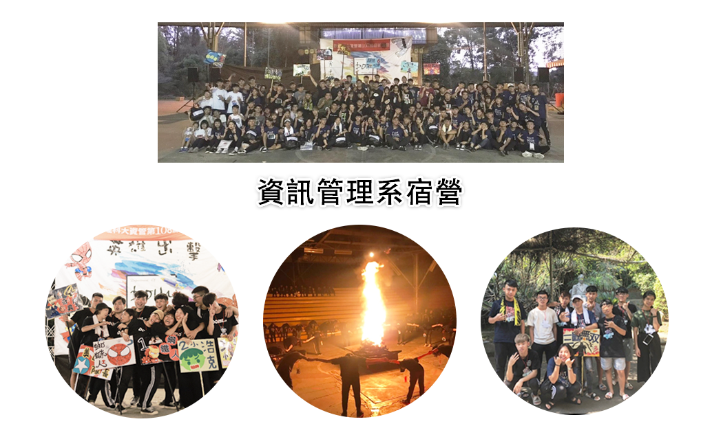
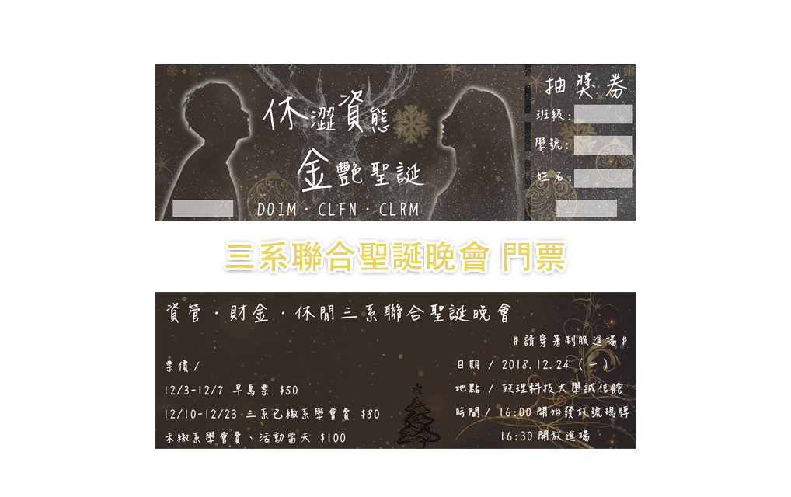
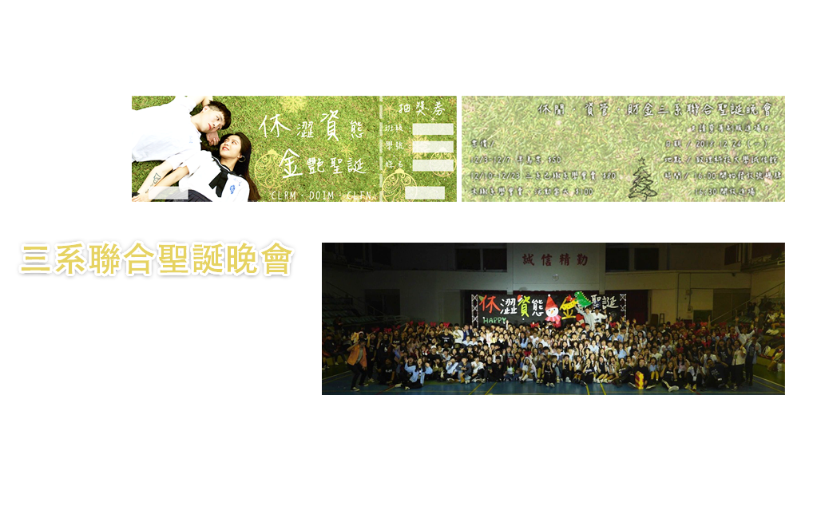
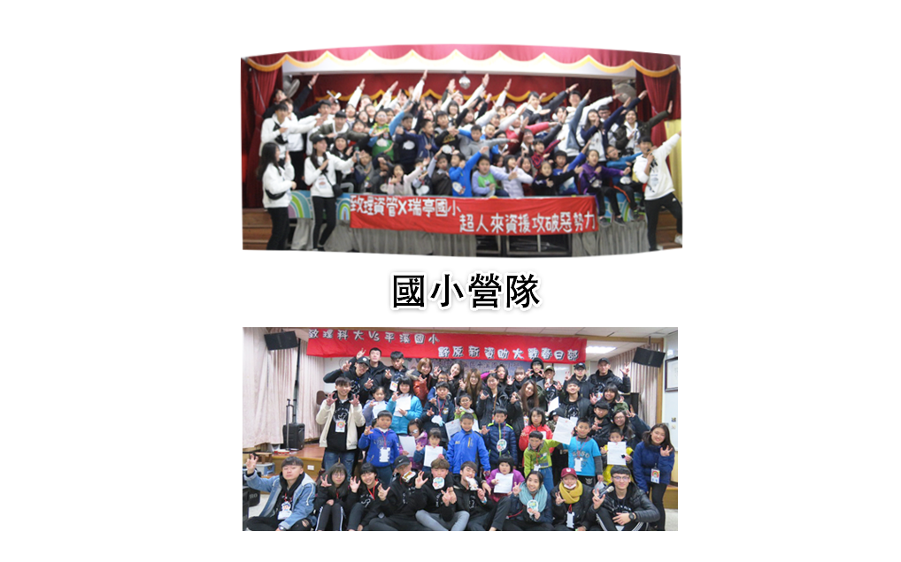
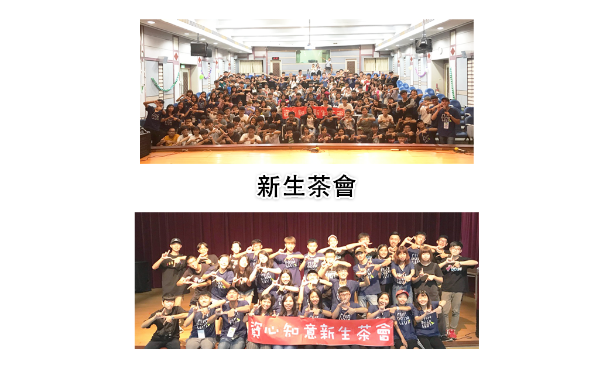

Q. 為什麼想從事頁設計？
A. 大學畢業於資訊管理系，在學期間曾接觸一門網頁設計課程，上課內容主要是以Visual Studio Code實際操作並在期末報告發表自己架設的網頁，老師在課程中教導我們各種不同的語法應用，透過反覆不斷的練習中，對此越來越熟練，其中也找到對網頁設計的樂趣。 除了程式撰寫外視覺的呈現也是很重要的一環，如何將心中的設計理念轉化為實體，在增進美感的同時也能讓網頁使用者體驗感到滿意，這些都是網頁設計需要注重的環節。 總結上述內容，促使著我利用課餘時間修習相關課程，持續增進在此領域的專業能力，看完公司的內部內容有更大的興趣，希望能加入貴公司充分發揮這段時間所學習的技能，為公司團隊增加效益。
Q. 實習期間的工作內容？
A. 在實習期間擔任的職位為資訊助理人員，其中主要的工作內容為協助不同部門有關前端網頁及後台設定的問題、製作網頁、維護網站、更新活動頁面。 製作網頁就是負責coding架設出一個網頁，使其上線，讓消費者可以做商品購買。 我所屬的部門是EC事業部，PM、企劃、廣告、設計、程式，每個部門之間都環環相扣需要相互配合，每一次的配合也都在學習一些溝通的技巧及相關的工作經驗。 有時候在處理事情上可能遇到困難，在透過詢問同部門的同事們，或是上網搜尋相關問題後，從中獲取不同處理方式，久而久之也培養我解決問題的能力。
Q. 對於社團生活有什麼收穫？